これは詳しい版です。時刻・回数・根拠がすべて入っています。結論だけ知りたい方は 要約のページへどうぞ。
この講評の前提を先に断っておきます。
2026年7月4日(土)、19:30:16 から始まり、およそ1時間30分にわたって撮影されています。カメラはXBotGo の固定撮影で、ネット支柱の上あたりの定点からコート全体を写しています。
この日は18の班に分かれて、合計143区間を観察しました。試合(得点を争うラリー)とアップ・ドリル・休憩が入り混じっており、電光表示の板を手がかりに、この日の流れをおおむね次のように読みました。
| 時間帯 | 内容 | 手がかり |
|---|---|---|
| 19:30:16〜19:33:09 | 開始前の集合・各自のアップ | 組織立った練習はまだ無い |
| 19:33:24〜19:36:20 | 複数のボールを回すアップ/ドリル | 「3、2、1、スタート!」の掛け声 |
| 19:36:20〜19:37:30ごろ | ゲーム進行(得点あり) | 電光表示が動く |
| 19:37:34〜19:41:24 | ゲーム一区切り。休憩・キャッチボール・整列 | 電光「0 0」で静止 |
| 19:41:25〜19:43:00 | 個々の自主練(ペッパー的なドリル) | 4対4の陣形になっていない |
| 19:43:08〜19:47:24 | ゲーム再開。ゆりこのセットからの得点(19:43:12) | 電光「02|02」 |
| 19:47:24〜19:50:11 | (この間、抽出コマなし) | 動きが少なく対象外 |
| 19:50:11〜19:53:48 | 1対1の反応・ドリル(号令の掛け声多数) | 「1,2,3」「フォーカー:スタート!」 |
| 19:55:43〜20:00:09 | ゲーム。るきのダイビング(19:56:21)・二枚ブロック成立(19:56:38) | 電光「01-01」→「01-02」 |
| 20:00:38〜20:09:47 | ゲーム(電光「02-04」〜「?-11」で推移)。20:09:37ごろは実はドリル | 「あと1個、あと1個」 |
| 20:10:37〜20:15:14 | この日いちばん盛り上がった追い上げ(4章で詳述) | 電光「左10右03」→「右12」 |
| 20:16:08〜20:19:31 | 「1回目の試合」開始前の準備・サーブ練習 | |
| 20:20:21〜20:29:37 | 試合続き。20:20:28二枚ブロック成立(るき)・20:23:42るきの強打(MVP)・20:27:09ゆいの転倒 | 電光「左0右02」〜「左11右10」 |
| 20:29:26〜20:29:37 | 「2回目の試合です」。電光「00-00」にリセット | |
| 20:31:11〜20:39:34 | 試合続き。20:31:46りるの守備、20:32:12ゆいのダイブ、20:37:30るきの強打 | 電光「10-04」〜「1-15」 |
| 20:39:47〜20:45:17 | 試合続き。20:44:53「2回目の試合です」でチーム入れ替え | 電光「2→3」〜「10」 |
| 20:46:05〜20:50:09 | 試合続き | 電光「0-0」〜「0-2」 |
| 20:50:17〜20:54:10 | 二枚ブロックが3回連続(20:51:25・20:52:21・20:54:07)、間に挟んで20:53:37やまさんの転倒 | |
| 20:54:10〜20:56:19 | (この間、抽出コマなし) | |
| 20:56:19〜21:00:12 | 試合続き。おおのさんが得点板のそばに立ち続ける | 電光「0-0」〜「0-4」 |
収録は21:00過ぎまで続いているとみられますが、143区間の観察はここまでです。締めの挨拶・円陣・記念撮影といった終わりの場面は、18班のどこからも報告されていません。通常のラリーが続いている最中に収録が終わっている、というのが実際のところです。
| 賞 | 受賞 | 理由 |
|---|---|---|
| MVP | るき | 走り込んで打ち込んだ一本に、周りから声が上がった |
| ファインプレー賞 | ゆい | 拾った球がつながり、そこから得点が生まれた |
| 声出し賞 | ゆきよ | この日の歓声は、ほとんどこの人から出ていた |
| 守りの賞 | ゆりこ | 滑り込んで拾い、そこから攻撃が作れるトスへ |
| 縁の下賞 | おおのさん | この回の主審。試合を成り立たせていた |
| 珍プレー賞 | やまさん | ネット際で膝から崩れる。周りは笑顔で見守っていた |
| いちばん盛り上がったプレー | 20:10〜20:15の追い上げ | 3点から12点まで、9回続けて取り返した |
| また進化したで賞 | 次回から | この日がいちばん古い記録なので、比べる相手がまだいない |

53:26。味方がダイブで拾ったボールに、後方から走り込んでネット際で跳び、そのまま強く打ち込みました。数秒後に「めっちゃ強い!」という声が入ります。この球を拾ったのはゆいで(ファインプレー賞の節を参照)、拾ってから0.5秒後にはもう るき が走り込んでいました。
 53:26
53:26
るきの型は、この日を通して一貫しています。
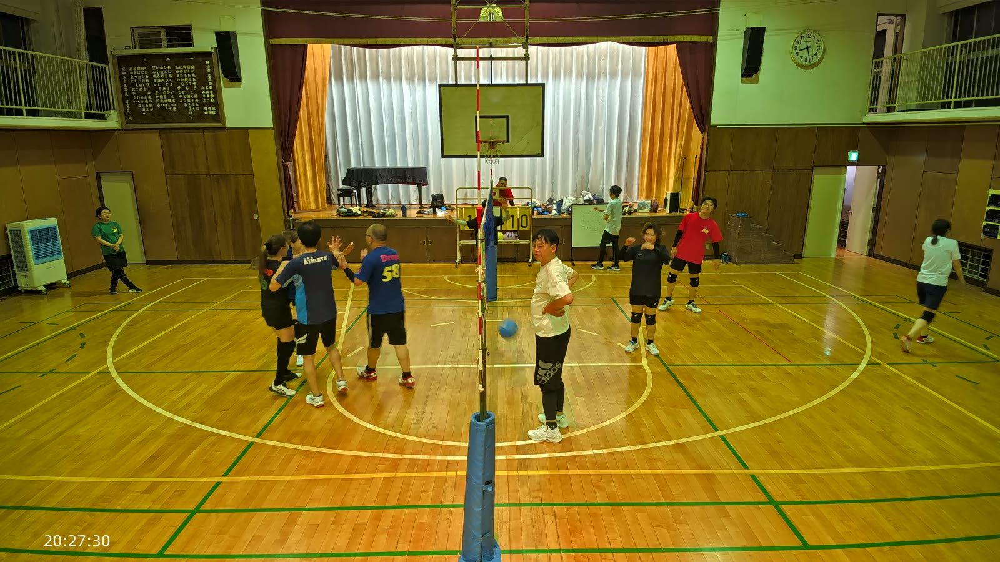
1:07:14他にも、1:09:06でネット際から下がりながら片腕を高く上げる場面など、この日はほぼ全編を通じて何らかの形でプレーに関わり続けていました。

53:25。コート奥のサイドラインに横っ跳びで滑り込み、床すれすれのボールを拾い上げました。その球が上がったから、0.5秒後にるきが走り込んで打ち込めています。直後の「めっちゃ強い!」は、この一本があってこそでした。
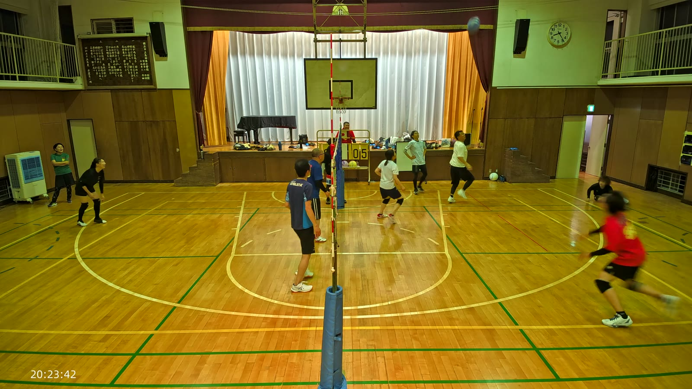
53:25体から入った場面は、ほかにも3回確認できています。いずれも当初は特徴の近い別の選手の候補とされていましたが、8月17日に kenboh へ確認し、すべてゆいと確定しました。
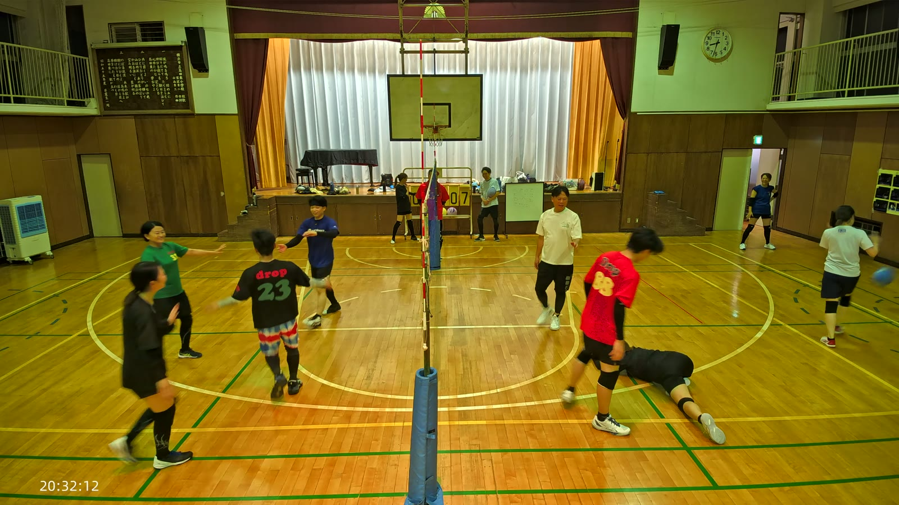
56:54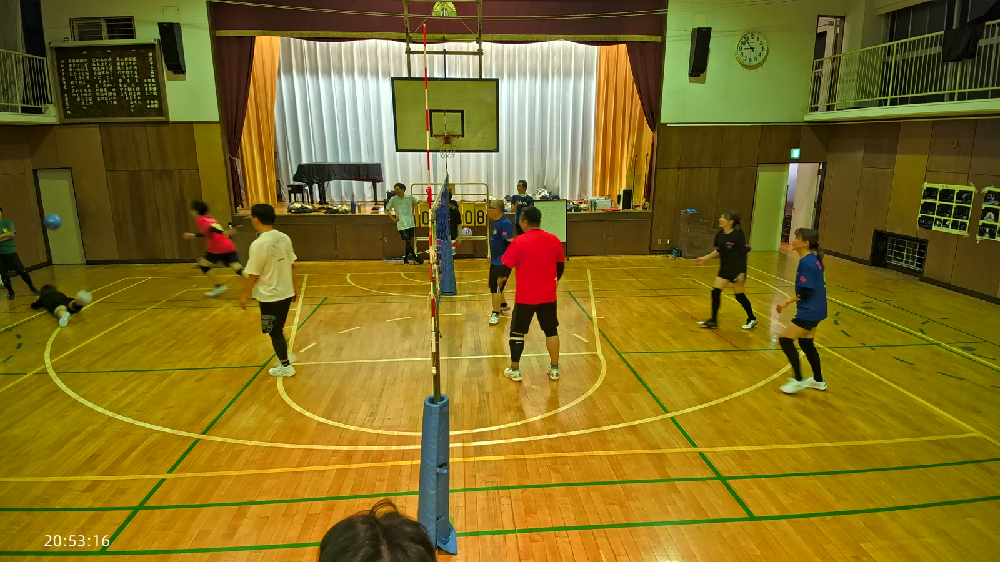
1:01:56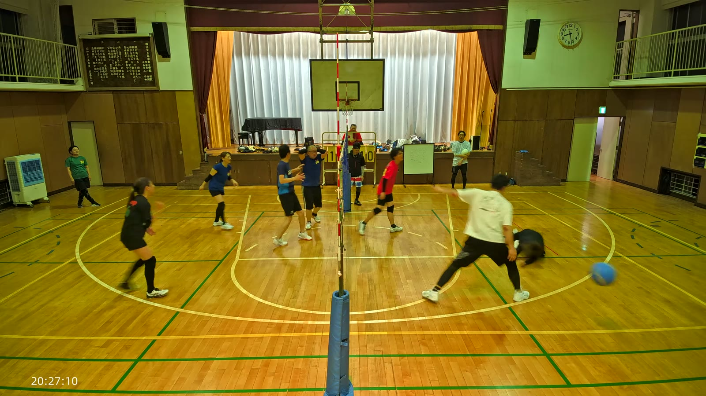
1:23:00合わせて4回、届くかどうかの球にいつも迷わず入っていました。そのうち最初の1本(53:25)だけが、明確に次の攻撃へつながったことまで確認できています。残り3回は「飛び込んだ」ところまでは確実ですが、その後ボールがどうなったかまでは追い切れていません。

この日はっきり残っている歓声は、4つとも ゆきよ の声でした。しかも4つとも、自分が決めたときではなく他の人のプレーに向けた声です。
プレーそのものでの登場は多くありませんが、55:52ではかずえ・やまさんとハイタッチする場面も確認できました。映像だけを見ていたら、この賞は出せませんでした。音を聞いて初めて分かった働きです。

41:13。床すれすれのボールに滑り込んで拾い、そこからやっさんへ、ネットから離した位置にトスを上げました。拾って終わりにせず、次の攻撃が作れる球にしています。
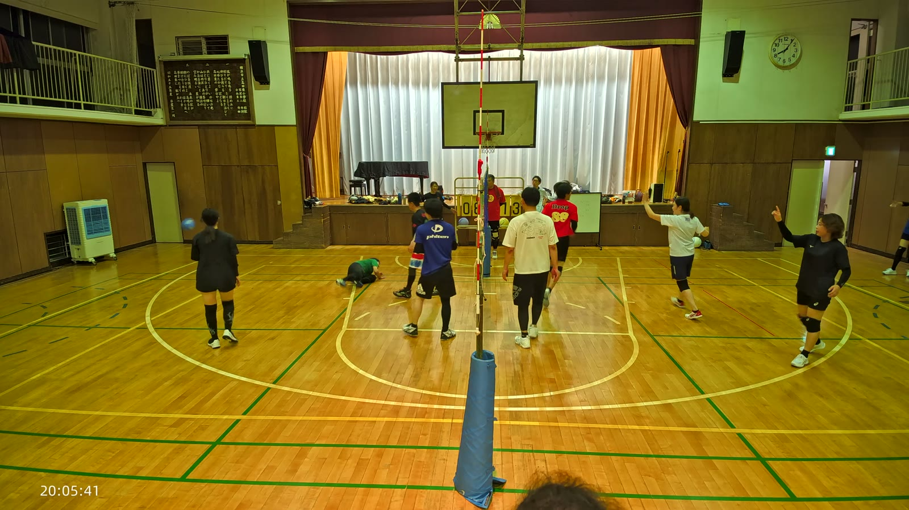
41:13この日は守備だけでなく、試合の立ち上がりからずっと関わり続けていました。12:56、まだ試合の早い時間帯に、両手を頭上に構えてジャンプでセット(トス)を上げており、高さも軌道も良い一本として記録されています。試合の終盤に近い1:29:13でも横に大きく飛び込んで守っており、序盤から終盤まで、守りと組み立ての両方で出番がありました。
倒れ込んだ仲間のところへ真っ先に駆け寄る場面も 1:01:22 にありました。
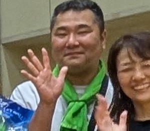
この回、おおのさんは主審を務めていました。ネット中央のポールの脇に立ち続け、最後の約4分間(1:26:03以降)はずっとそこにいます。
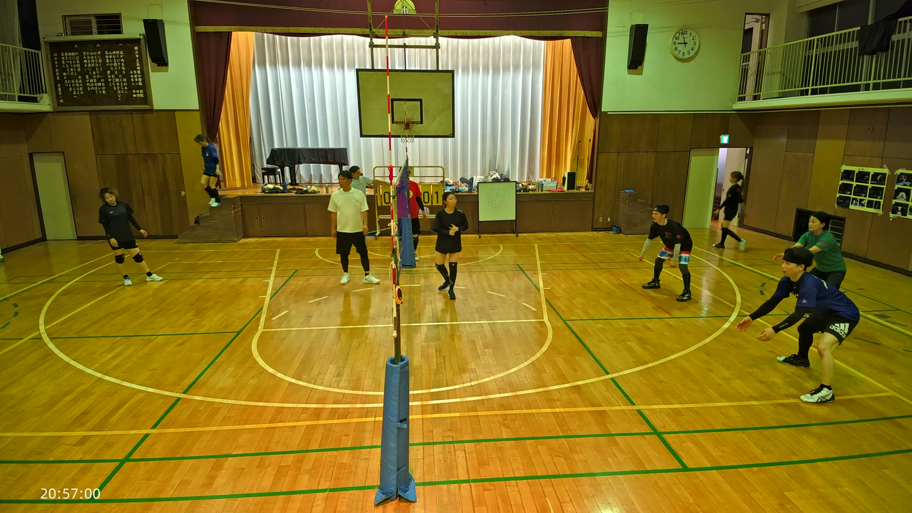
1:26:44ソフトバレーでは、プレーしていないときにバレーの知識が高い人が審判を務めます。コートに立つのと同じくらい、試合を成り立たせている役割です。
この日はプレーでも見どころがありました。40:38ではアンダーハンドのサーブを打ち、やっさんがレシーブしてハイタッチにつながっています。44:06のダイビングレシーブに続き、44:17にも2本目のダイビングを見せました。プレーヤーと審判・得点係の両方の顔を持つ1日でした。
1:23:21、ネット際で膝から崩れ、床に手をつきました。周りの選手は笑顔で見守っていて、すぐに起き上がっています。
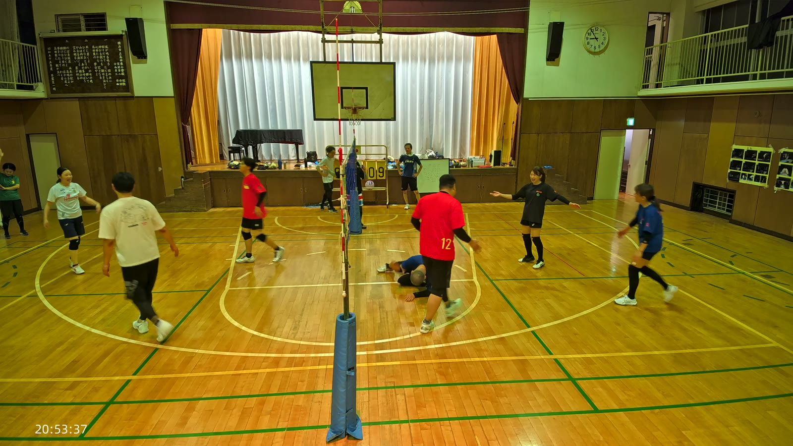
1:23:21この転倒は、良いプレーを挟んで起きています。崩れる直前の1:21:09と1:22:05、それぞれ別の味方との二枚ブロックを成立させ、崩れた直後の1:23:51にも三度目の二枚ブロックを決めています。わずか3分足らずのあいだに、やまさんが絡む二枚ブロックが3回連続で成立し、その真ん中でコミカルに転んでいた、というのがこの場面の全体像です。
この日の前半でも、6:08で低いボールを丁寧に受けて上げる、12:57で単独ブロックタッチを決めるなど、堅実なプレーが多く見られました。転ぶのは、それだけ球に向かっているからでもあります。
この日いちばん歓声が集まったのは、40:21 から 45:00 あたりの5分間でした。得点板を追うと、片方が「10」で止まっているあいだに、もう片方が「3」から「12」まで伸び続け、最後に追い抜いています。詳しい経過は4章にまとめました。
過去と引き比べて成長を讃える賞ですが、7月4日はいま手元にあるいちばん古い記録なので、比べる相手がまだいません。この日の記録は時刻つきで残してあります。次の回からは、ここを起点に「何が変わったか」が書けます。選手ごとの型は④(全記録)の「選手ごとの記録」にまとめてあるので、次に同じ選手を分析するときはそこと引き比べてください。
この日は「盛り上がり度が高いのに実は試合ではなかった」場面が複数見つかっています。電光表示が動いているか(得点)、止まっているか(ドリルや休憩)を必ず確かめる必要がありました。
| 時刻 | 盛り上がり | 実際の中身 |
|---|---|---|
| 41:25〜42:06 | 99(この日最高値のひとつ) | 個々の自主練(ペッパー的)が中心。試合ではない |
| 19:46:08〜42 | 99 | ネットを挟んだ普通の往復。歓声はむしろ集中していなかった |
| 20:09:37〜47 | 87 | 「あと1個、あと1個」の数え上げドリル |
| 20:47:05〜16 | 100(この日の最高値) | 決定的な場面は見当たらず |
盛り上がり度(音量と動きの量から機械的に出した値)は、プレーの質とは対応しません。この日も、値だけでは試合とドリルを見分けられませんでした。
電光表示を追うと、この5分間で片方のチームが3点から12点まで、ほぼ連続で得点を重ねていました。流れはこうです。
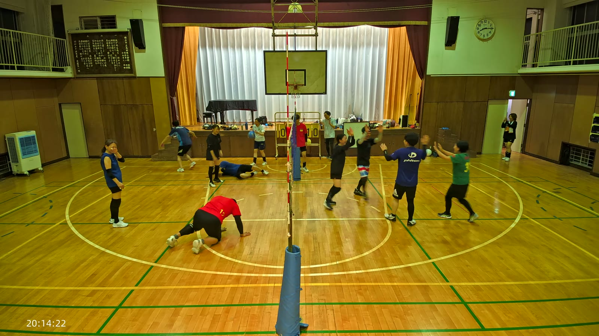
44:06得点板は「左10右03」から「10-11」「11-12」まで進み、止まっていた側を追い抜くところまで確認できています。点差が開いてからのほうが、動きも声かけも激しくなっていました。拾う・上げる・打つのどれか一つが欠けても、この追い上げは続かなかったはずです。
kenboh の観点に沿って書きます。レシーブ(カット)・トス(セット)・アタック の精度と速さが基本、サーブ・ブロック・フェイント・ジャッジはその次位という優先順位を踏まえ、まずレシーブ・トス・アタックを厚く扱います。
| 項目 | 結果 |
|---|---|
| 同一コートの二枚ブロック(相手の攻撃を止める形) | 確定7回。下の表を参照 |
| 二枚目が間に合わなかった例 | 確定3回 |
| 二枚ブロックの候補どまり(確定に至らず) | 10件。同じ側の選手どうしだった、別々のボールへの反応だった、などの理由で取り下げ |
| クイックを狙った短い助走 | 候補1件(確度中)。23:46ごろ、るきが近距離の球にほぼ間を置かず跳び込んだ場面。直前がドリルの延長だった可能性も残る |
| フェイントと判断できる場面 | 0件。18班すべてで確認できなかった |
| 高いつなぎの直後に助走してアタックに入った例 | 5回 |
| 同、入らなかった例 | 1回 |
| 得点後に手を合わせるなどの反応 | 確認できた・候補を含めて合計38件 |
| 失点後に下を向く・黙り込む場面 | 確定0件。候補1件のみ(悔しさか体勢を整えただけかは静止画から断定できないと明記) |
観点: 落下するボールの真下でボールを受けているか。面を早く作り、勢いを吸収できているか。
この日は女性たちの守備が特に厚く記録されています。ゆりこは41:13のダイビングに加え、序盤(12:56)から終盤(1:29:13)まで通して関わっています。ゆいは合わせて4回の飛び込みを見せ、うち1回(53:25)は明確に次の攻撃へつながりました。
男性側では、おおのさんとやまさんが最も多くのダイビングを記録しています。44:06と44:17のおおのさんの連続ダイブ、44:08のやまさんの伏せる守備が、いずれも劣勢の追い上げの時間帯(4章)に集中しています。
観点: アタッカーが打ちやすいよう、ネットから少し離した山なりの軌道を作れているか。
ゆりこの12:56の一本が、この日いちばんはっきり記録されたセットです。両手を頭上に構えてジャンプし、高さ・軌道ともに良い形として記録されました。
「高く上げたつなぎの直後に、助走してアタックに入れたか」という観点では、5回入り、1回入らなかったことが分かっています。入った5例は、いずれも味方のアタックが実際に成立するところまで確認できました。1回だけ、るきの高いトスの後に相手側がブロック対応に回ってしまい、アタックにつながらなかった例もありました。
観点: 相手がいないところを正確に狙って打っているか。芯を捉えてドライブ回転をかけ、コート内に落とせているか。
この日、アタックの中心は主に男性選手でした。るきは53:26の強打(MVPの根拠)のほか、1:07:14でも大きく跳んで打ち込んでいます。おおのさんも40:38のサーブ以外に、速いボールを腕を振り抜いて処理する守備からの反撃も見せていました。
女性選手がアタックを打ったと確認できた場面はこの日ありませんでした。これは技術不足ではなく、この日確認できた女性の触球の大半が「上げ」だったことと表裏一体です(トスの節を参照)。
観点: 強く、正確に打てているか。 / ミスが多く、ネットにあたったりアウトになったりしていないか。
おおのさんの40:38のアンダーハンドサーブが、この日いちばんはっきり追えたサーブです。ボールは右コートへ届き、やっさんがレシーブしてラリーが続きました。サーブからレシーブ、そしてハイタッチまでを一続きで確認できた、数少ない例です。
この項目は、静止画からの評価にはっきり限界があります。サーブが打たれる瞬間と、入ったか外れたかの結果が、コマとコマの間に収まってしまうことが多いためです。明確なサーブミスと断定できる場面は、この日は報告されていません。
観点: 相手アタッカーの正面に素早く入れているか。一人ではなく二人で対応できているか。
この日いちばんはっきり成果が出た項目です。18班を通じて、同一コートの二枚ブロックが確定7回成立しています。
| 時刻 | 選手 |
|---|---|
| 14:51 | やっさん + 別の選手 |
| 26:22 | かずお + おおのさん |
| 33:37 | やっさん + 別の選手 |
| 50:12 | るき + 別の選手 |
| 1:21:09 | やまさん + かずえ |
| 1:22:05 | やまさん + 別の選手 |
| 1:23:51 | やまさん + おおのさん |
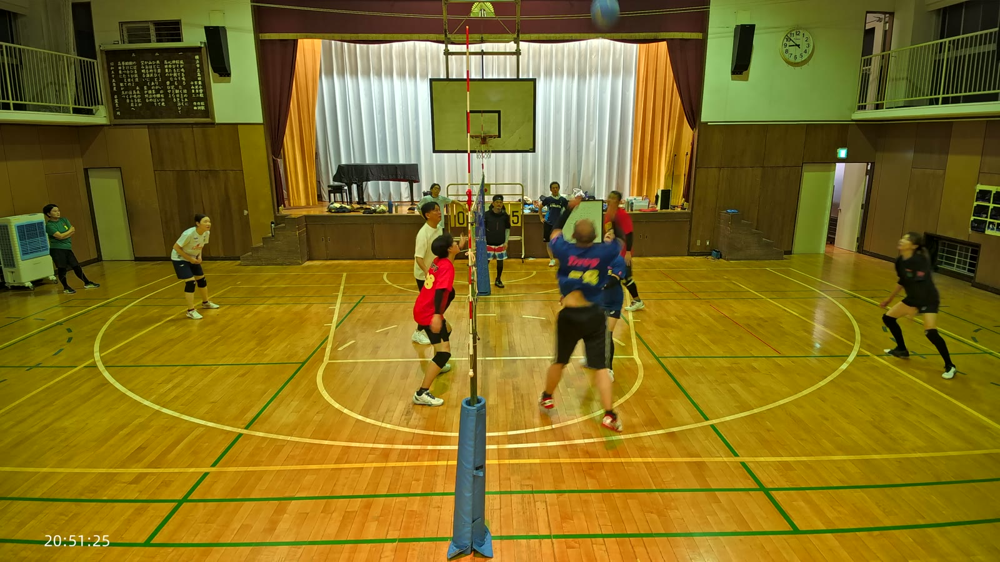
1:21:097回とも、二枚目が一枚目に遅れずに跳べていました。一方で、二枚目が間に合わなかった例も3回あります。いずれも、隣の選手が跳ばなかったという共通点がありました(14:54のやまさんの単独ジャンプなど)。できる・できないではなく、間に合うかどうかという段階にいると言えそうです。
観点: 強打のフォームから直前に相手のいないスペースへ優しく落とせているか。
この観点は、この映像からは評価できませんでした。143区間を通じて、フェイントと断定できる場面は見つかっていません。
観点: トライしているか。セッターと呼吸を合わせ、トスと同時に短い助走で鋭く踏み込めているか。
候補は1件だけありました。23:46ごろ、るきが近距離の球にほとんど間を置かず跳び込んで攻撃した場面です。ただし直前の区間がドリルの延長だった可能性も残っており、確度は中程度にとどめています。
観点: ブロックに跳んだ味方の後ろや、シャットアウトされた瞬間のボールを予測して動けているか。
るきの動きが良い例です。26:21、高い打点から打ったボールが二枚ブロックに触れられましたが、直後にはもうしゃがんでカバーの姿勢に戻っていました。攻撃が止められても、そこで終わらない動きです。
この日は「間に合った」例と「間に合わなかった」例の両方が、はっきり時刻つきで記録できました。成立した7回はいずれも二枚目が遅れておらず、間に合わなかった3回はいずれも隣の選手がそもそも跳んでいませんでした。次は、跳ぶ・跳ばないの判断そのものをもう少し早くできるかが課題になりそうです。
この日の書き起こしは、良いプレーの裏づけとして何度も効きました。「めっちゃ強い!」「やばい!やばい!」「上手い!」「頑張れ頑張れ!」は、いずれも映像の具体的な場面と時刻がぴったり一致しています(声出し賞の節を参照)。ほかにも「ナイスゲーマン!」が21:17ごろから12回連続で入るなど、掛け声そのものが多い練習でした。
この日、いちばん明確に「良い」と言える観点はここです。失点直後にうつむいたり黙り込んだりする場面は、確定では0回でした。
公式試合のタイムアウトに当たる場面はありませんが、アップ・ドリル・休憩が試合の合間にたびたび挟まれていました。「1回目の試合」「2回目の試合です」という区切りのアナウンスが複数回入っており(19:43:47、20:29:26、20:44:53ごろなど)、ここを境にチーム分けが変わっていたとみられます。
成立した7回はすべて二枚目が間に合っていた一方、間に合わなかった3回はすべて隣の選手がそもそも跳んでいませんでした。できる・できないの技術差ではなく、判断の速さの差のようです。「誰が跳んだら誰が寄るか」を先に決めておくと、速い攻撃にも対応しやすくなりそうです。
候補は1件ありましたが、確度は中程度にとどまりました。トスが低く安定して置けるようになれば、次はもっとはっきり判定できる形に挑戦できそうです。
この日は女性選手を中心に、取り違えて後から訂正した箇所がいくつかありました。次回はできるだけ早い段階で人物を確定できると、記録の精度がさらに上がります。
けんぴー(AI)